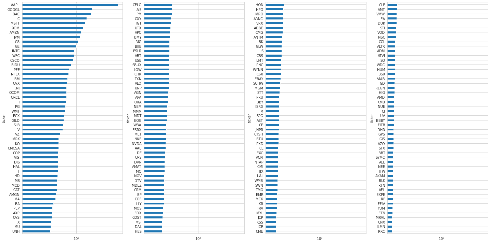

Data Prep#
import warnings
warnings.filterwarnings('ignore')
%matplotlib inline
from pathlib import Path
import numpy as np
import pandas as pd
import matplotlib.pyplot as plt
import seaborn as sns
sns.set_style('whitegrid')
idx = pd.IndexSlice
deciles = np.arange(.1, 1, .1).round(1)
Load Data#
DATA_STORE = Path('..', 'data', 'assets.h5')
with pd.HDFStore(DATA_STORE) as store:
data = (store['quandl/wiki/prices']
.loc[idx['2007':'2016', :],
['adj_open', 'adj_high', 'adj_low', 'adj_close', 'adj_volume']]
.dropna()
.swaplevel()
.sort_index()
.rename(columns=lambda x: x.replace('adj_', '')))
metadata = store['us_equities/stocks'].loc[:, ['marketcap', 'sector']]
data.info(null_counts=True)
<class 'pandas.core.frame.DataFrame'>
MultiIndex: 6951874 entries, ('A', Timestamp('2007-01-03 00:00:00')) to ('ZUMZ', Timestamp('2016-12-30 00:00:00'))
Data columns (total 5 columns):
# Column Non-Null Count Dtype
--- ------ -------------- -----
0 open 6951874 non-null float64
1 high 6951874 non-null float64
2 low 6951874 non-null float64
3 close 6951874 non-null float64
4 volume 6951874 non-null float64
dtypes: float64(5)
memory usage: 292.5+ MB
metadata.sector = pd.factorize(metadata.sector)[0]
metadata.info()
<class 'pandas.core.frame.DataFrame'>
Index: 6834 entries, PIH to ZYME
Data columns (total 2 columns):
# Column Non-Null Count Dtype
--- ------ -------------- -----
0 marketcap 5766 non-null float64
1 sector 6834 non-null int64
dtypes: float64(1), int64(1)
memory usage: 160.2+ KB
data = data.join(metadata).dropna(subset=['sector'])
data.info(null_counts=True)
<class 'pandas.core.frame.DataFrame'>
MultiIndex: 5395695 entries, ('A', Timestamp('2007-01-03 00:00:00')) to ('ZUMZ', Timestamp('2016-12-30 00:00:00'))
Data columns (total 7 columns):
# Column Non-Null Count Dtype
--- ------ -------------- -----
0 open 5395695 non-null float64
1 high 5395695 non-null float64
2 low 5395695 non-null float64
3 close 5395695 non-null float64
4 volume 5395695 non-null float64
5 marketcap 5385154 non-null float64
6 sector 5395695 non-null float64
dtypes: float64(7)
memory usage: 309.5+ MB
print(f"# Tickers: {len(data.index.unique('ticker')):,.0f} | # Dates: {len(data.index.unique('date')):,.0f}")
# Tickers: 2,399 | # Dates: 2,547
Select 500 most-traded stocks#
dv = data.close.mul(data.volume)
top500 = (dv.groupby(level='date')
.rank(ascending=False)
.unstack('ticker')
.dropna(thresh=8*252, axis=1)
.mean()
.nsmallest(500))
Visualize the 200 most liquid stocks#
top200 = (data.close
.mul(data.volume)
.unstack('ticker')
.dropna(thresh=8*252, axis=1)
.mean()
.div(1e6)
.nlargest(200))
cutoffs = [0, 50, 100, 150, 200]
fig, axes = plt.subplots(ncols=4, figsize=(20, 10), sharex=True)
axes = axes.flatten()
for i, cutoff in enumerate(cutoffs[1:], 1):
top200.iloc[cutoffs[i-1]:cutoffs[i]
].sort_values().plot.barh(logx=True, ax=axes[i-1])
fig.tight_layout()

to_drop = data.index.unique('ticker').difference(top500.index)
len(to_drop)
1899
data = data.drop(to_drop, level='ticker')
data.info(null_counts=True)
<class 'pandas.core.frame.DataFrame'>
MultiIndex: 1256095 entries, ('A', Timestamp('2007-01-03 00:00:00')) to ('ZION', Timestamp('2016-12-30 00:00:00'))
Data columns (total 7 columns):
# Column Non-Null Count Dtype
--- ------ -------------- -----
0 open 1256095 non-null float64
1 high 1256095 non-null float64
2 low 1256095 non-null float64
3 close 1256095 non-null float64
4 volume 1256095 non-null float64
5 marketcap 1253855 non-null float64
6 sector 1256095 non-null float64
dtypes: float64(7)
memory usage: 72.6+ MB
print(f"# Tickers: {len(data.index.unique('ticker')):,.0f} | # Dates: {len(data.index.unique('date')):,.0f}")
# Tickers: 500 | # Dates: 2,518
Remove outlier observations based on daily returns#
before = len(data)
data['ret'] = data.groupby('ticker').close.pct_change()
data = data[data.ret.between(-1, 1)].drop('ret', axis=1)
print(f'Dropped {before-len(data):,.0f}')
Dropped 502
tickers = data.index.unique('ticker')
print(f"# Tickers: {len(tickers):,.0f} | # Dates: {len(data.index.unique('date')):,.0f}")
# Tickers: 500 | # Dates: 2,517
Sample price data for illustration#
ticker = 'AAPL'
# alternative
# ticker = np.random.choice(tickers)
price_sample = data.loc[idx[ticker, :], :].reset_index('ticker', drop=True)
price_sample.info()
<class 'pandas.core.frame.DataFrame'>
DatetimeIndex: 2517 entries, 2007-01-04 to 2016-12-30
Data columns (total 7 columns):
# Column Non-Null Count Dtype
--- ------ -------------- -----
0 open 2517 non-null float64
1 high 2517 non-null float64
2 low 2517 non-null float64
3 close 2517 non-null float64
4 volume 2517 non-null float64
5 marketcap 2517 non-null float64
6 sector 2517 non-null float64
dtypes: float64(7)
memory usage: 157.3 KB
price_sample.to_hdf('data.h5', 'data/sample')
Compute returns#
Group data by ticker
by_ticker = data.groupby(level='ticker')
Historical returns#
T = [1, 2, 3, 4, 5, 10, 21, 42, 63, 126, 252]
for t in T:
data[f'ret_{t:02}'] = by_ticker.close.pct_change(t)
Forward returns#
data['ret_fwd'] = by_ticker.ret_01.shift(-1)
data = data.dropna(subset=['ret_fwd'])
Persist results#
data.info(null_counts=True)
<class 'pandas.core.frame.DataFrame'>
MultiIndex: 1255093 entries, ('A', Timestamp('2007-01-04 00:00:00')) to ('ZION', Timestamp('2016-12-29 00:00:00'))
Data columns (total 19 columns):
# Column Non-Null Count Dtype
--- ------ -------------- -----
0 open 1255093 non-null float64
1 high 1255093 non-null float64
2 low 1255093 non-null float64
3 close 1255093 non-null float64
4 volume 1255093 non-null float64
5 marketcap 1252855 non-null float64
6 sector 1255093 non-null float64
7 ret_01 1254593 non-null float64
8 ret_02 1254093 non-null float64
9 ret_03 1253593 non-null float64
10 ret_04 1253093 non-null float64
11 ret_05 1252593 non-null float64
12 ret_10 1250093 non-null float64
13 ret_21 1244593 non-null float64
14 ret_42 1234093 non-null float64
15 ret_63 1223593 non-null float64
16 ret_126 1192093 non-null float64
17 ret_252 1129093 non-null float64
18 ret_fwd 1255093 non-null float64
dtypes: float64(19)
memory usage: 187.5+ MB
data.to_hdf('data.h5', 'data/top500')